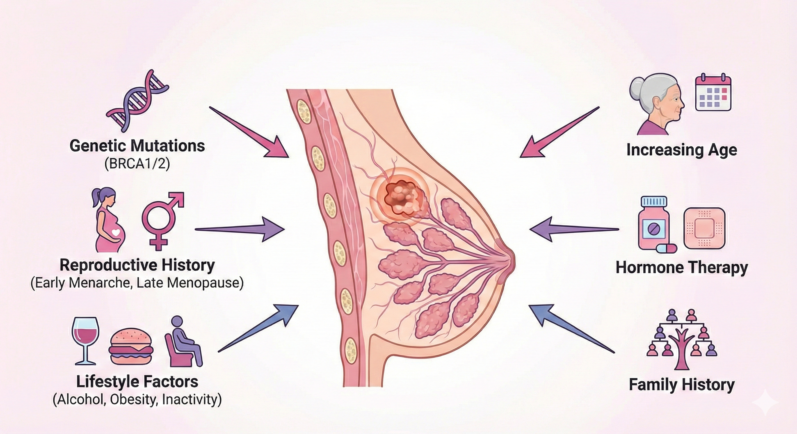

Question
Which lesions progress?
Identify tissue features associated with progression and recurrence risk in early breast cancer.
Research track
The breast cancer track studies precursor lesions, ductal carcinoma in situ, and invasive disease to understand how localized tumor-stroma interactions shape progression and radiotherapy response.

Overview
Breast cancer develops through a continuum from atypical hyperplasia and ductal carcinoma in situ to invasive carcinoma, but only a subset of lesions progress. This makes biological and clinical prediction of progression a major challenge.
Our projects test the hypothesis that already within early lesions, localized cellular ecosystems exist where tumor-stroma interactions synergistically drive disease progression and response to radiotherapy.
Question
Identify tissue features associated with progression and recurrence risk in early breast cancer.
Material
Includes benign lesions, atypical hyperplasia, DCIS, recurrence material, and metastatic disease.
Outcome
Develop improved risk and treatment stratification for early breast cancer patients.
Methods and cohort

Selected publications
Strell, Folkvaljon, Holmberg, Schiza, Thurfjell et al.
Micke, Strell, Mattsson, Martin-Bernabe, Brunnström et al.
Bozoky, Moro, Strell, Geyer, Heuchel et al.
Backman, La Fleur, Kurppa, Djureinovic, Elfving et al.